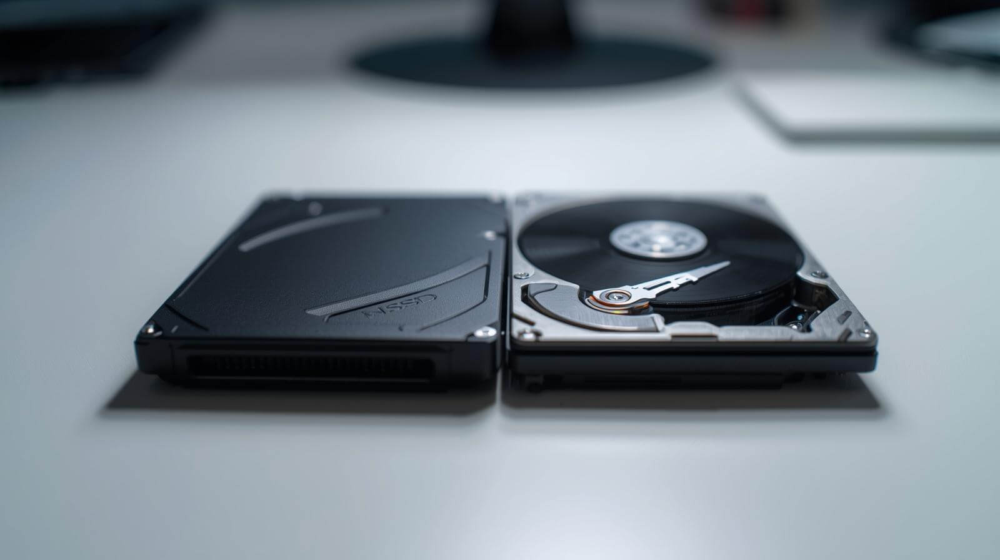

RAM (Memory)

Random Access Memory, or RAM, is where a computer keeps information it needs while programs are open. Having more RAM helps your computer handle several programs at once without slowing down.
Understanding the physical parts that power modern computers
Random Access Memory, or RAM, is where a computer keeps information it needs while programs are open. Having more RAM helps your computer handle several programs at once without slowing down.

Storage devices like Solid-State Drives (SSD) and Hard Disk Drives (HDD) keep the operating system, programs, and your files saved, even when the computer is off.